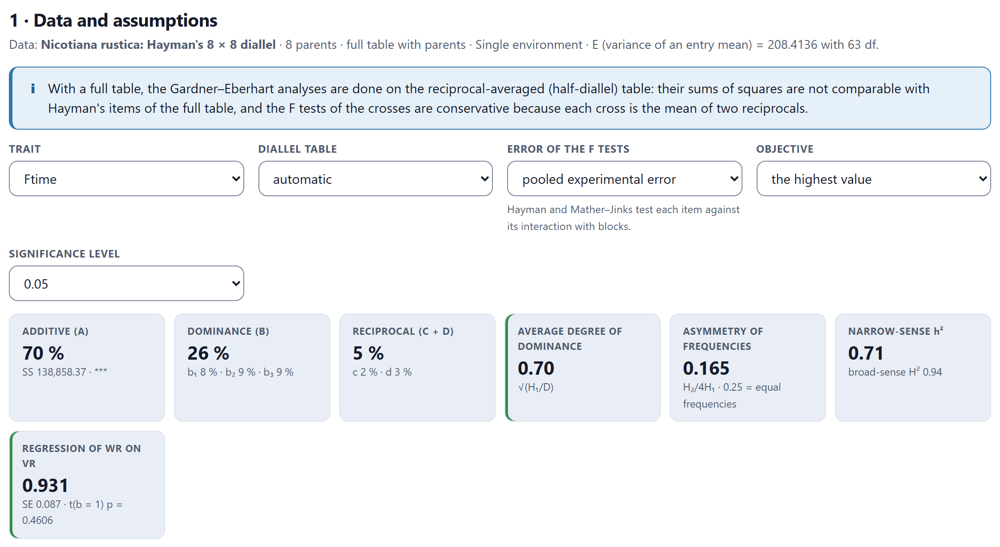
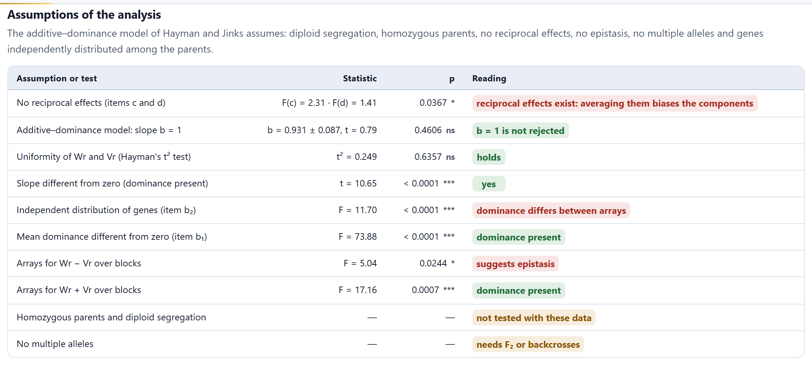
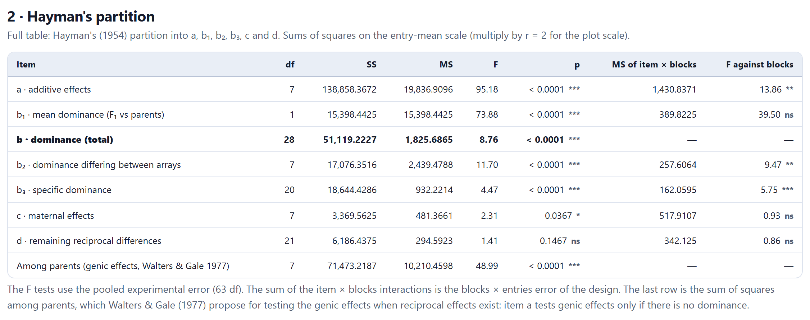
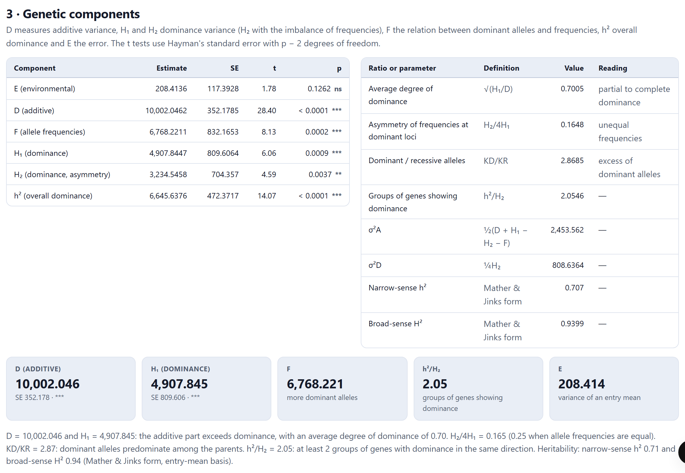
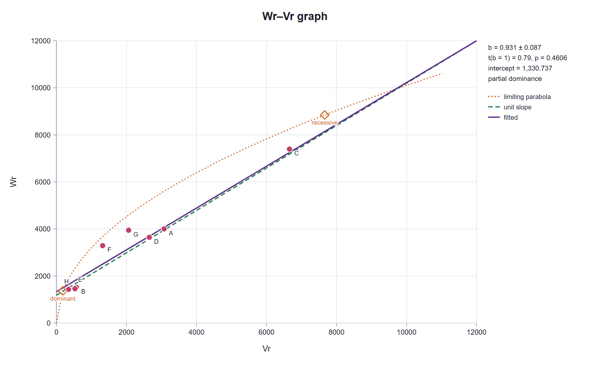
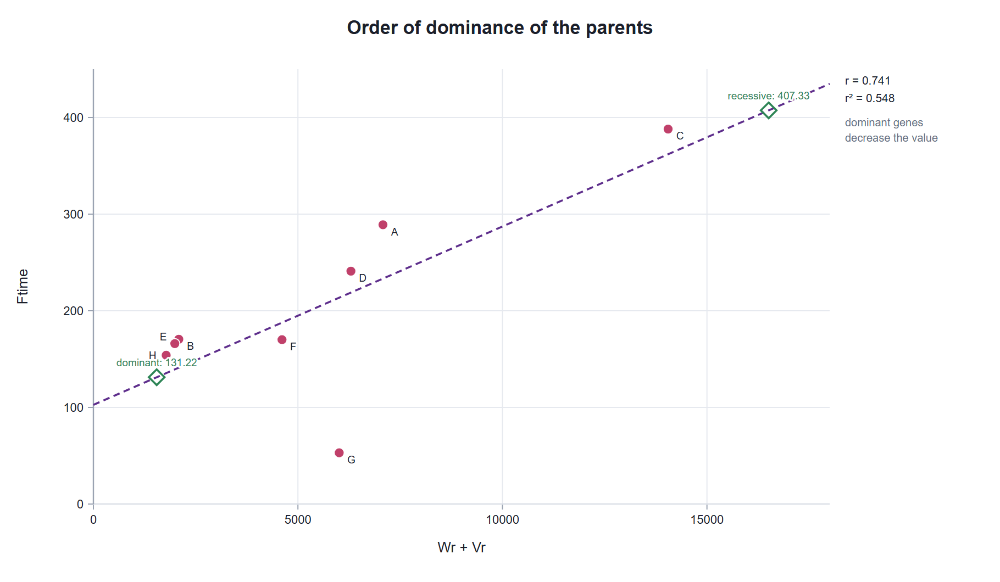
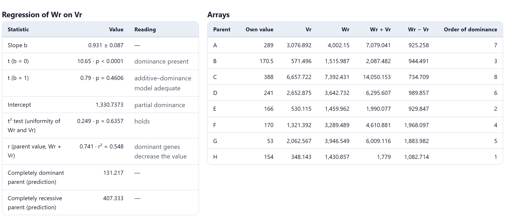
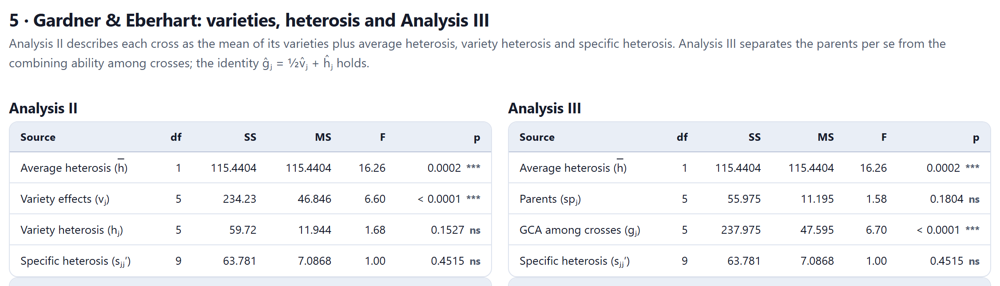
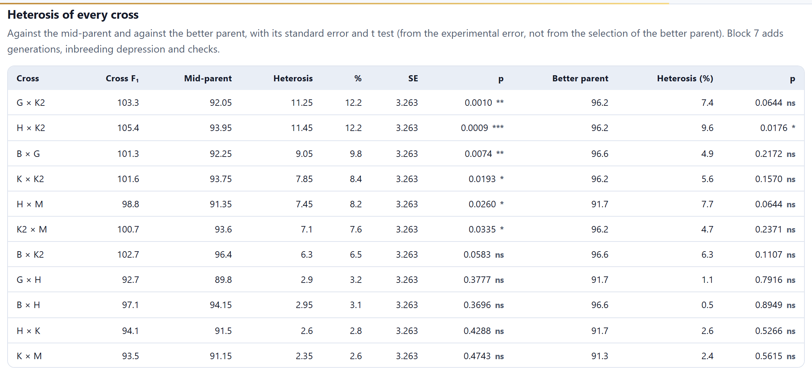
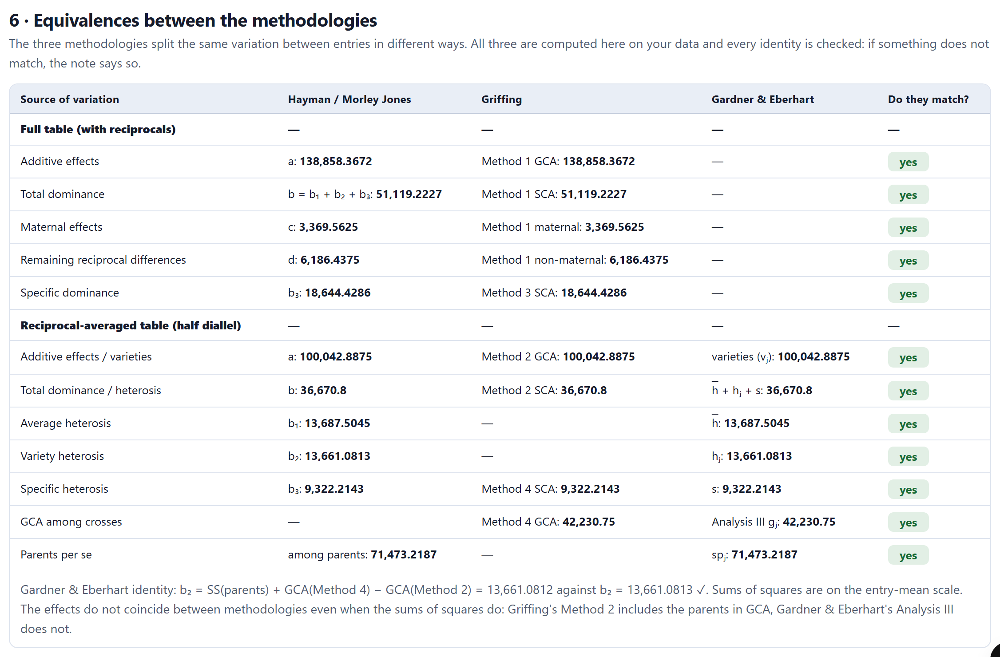

The same diallel can be read in two other ways. Hayman and Jinks’s reading asks about gene action: how much of the variation is additive and how much is due to dominance, whether dominance is partial or overdominance, and which parents carry the dominant alleles. Gardner and Eberhart’s reading, designed for crosses between varieties, splits heterosis into average, variety and specific heterosis. Block 5 does both, with the Wr–Vr graph, and checks on your data that both agree with Griffing.
Griffing (Chapter 4) describes each parent by its combining ability. Hayman and Jinks go deeper and describe the genes, with an additive–dominance model and a set of assumptions. Gardner and Eberhart describe varieties and the heterosis of their crosses. All three split the same variation between entries, so their sums of squares match; what changes is the question and the interpretation.
| Analysis | Question | Needs |
|---|---|---|
| Hayman’s (1954) partition | Are there additive effects, mean dominance, dominance that varies between parents, specific dominance and reciprocal effects? | Full table with reciprocals (or a half table, with Morley Jones, 1965) |
| Hayman and Jinks components | How much do the additive variance (D) and the dominance variance (H1, H2) weigh? Is there overdominance? Do dominant alleles predominate? | Homozygous parents included in the experiment |
| Wr–Vr graph | Does the additive–dominance model hold? Which parents carry more dominant genes? | At least five or six parents for the tests to have power |
| Gardner and Eberhart (1966), Analyses II and III | How does each variety perform, how much average heterosis is there, which varieties contribute heterosis and which crosses have specific heterosis? | The varieties (parents) and their crosses |
| Heterosis of every cross | By how much does each cross exceed the mean of its parents and the better of them? | Parents and crosses |
The chapter uses two published examples. For Hayman and Jinks, Hayman’s (1954) 8 × 8 diallel of Nicotiana rustica (eight lines, full table with reciprocals, two blocks, days to flowering), the classic case of the Wr–Vr graph. For Gardner and Eberhart, the crosses among six maize varieties of Lonnquist and Gardner (1961), a half diallel with the varieties as parents. Both are reproduced exactly with the published values.
Like Block 4, Block 5 takes the adjusted means and the error from Block 3. The card 1 · Data and assumptions summarizes the data in one line (parents, kind of table and E, the variance of an entry mean), shows the warnings and offers the controls in Table 5.2. The tiles summarize how the variation splits among additive effects, dominance and reciprocals, the main Hayman and Jinks ratios and the regression of Wr on Vr.

| Control | Options | What it is for |
|---|---|---|
| Trait | those of Block 3 | The whole block is recomputed for the chosen trait |
| Environment | each environment · mean of all | With several environments: these analyses are done on a single diallel table |
| Diallel table | automatic · full · half | Use the table with reciprocals (Hayman) or one cross per pair (Morley Jones) |
| Error of the F tests | pooled experimental error · interaction of each item with blocks | The second is the test of Hayman and of Mather and Jinks; it needs complete blocks |
| Error corrections (half diallel) | derived for single crosses · classical | Only in a half diallel: how the error is subtracted from H1, H2 and h² (Section 5.4) |
| Objective | the highest value · the lowest value | Which parent counts as the better one in the heterosis and how the crosses are sorted |
| Significance level | 0.05 · 0.01 · 0.10 | For the readings and the intervals |
Hayman and Jinks’s additive–dominance model assumes diploid segregation, homozygous parents, no reciprocal effects and no epistasis, at most two alleles per locus, and genes distributed independently among the parents. The assumptions table tests those the data allow and says which ones they do not.

With these data the tests do not fully agree, and that is normal. The slope of Wr on Vr (b = 0.931 ± 0.087) does not depart from 1 and the t² test of uniformity is passed, but the analysis of Wr − Vr across blocks does find differences between arrays; moreover, the reciprocals are significant, so averaging them, as the model requires, biases the components slightly. The prudent reading is to use the components as an approximate description and to rely on the scaling tests of Block 7 or on the triple test cross of Block 6 if epistasis matters.
The card 2 · Hayman's partition divides the variation between entries into six items (Table 5.3). With the full table all six are used; with a half diallel, the first four, computed with the method of Morley Jones (1965), which matches Gardner and Eberhart’s partition. The last row, the variation among parents, is the one Walters and Gale (1977) propose for testing gene effects when there are reciprocal effects, because item a tests them only if there is no dominance.
| Item | df | Measures | Equivalent to |
|---|---|---|---|
| a | p − 1 | Additive effects: differences between the arrays (rows) of the table | GCA of Griffing’s Method 1 |
| b1 | 1 | Mean dominance: the F1s against the parents | average heterosis (h) |
| b2 | p − 1 | Dominance that differs between arrays: dominant alleles concentrated in some parents | variety heterosis (hj) |
| b3 | p(p − 3)/2 | Specific dominance of each cross | SCA of Method 3 (full table) or Method 4 |
| c | p − 1 | Maternal effects | maternal effects of Method 1 |
| d | (p − 1)(p − 2)/2 | Remaining reciprocal differences | non-maternal effects of Method 1 |

With the Error of the F tests menu set to interaction of each item with blocks, the F tests in the table become those of the last two columns. These interactions are computed only with complete blocks in one environment; their sum is the blocks × entries error from Block 3. The figure below the table shows the percentage of the variation each item accounts for, or its mean squares.
On the plot scale (twice as large, with two blocks), the items are those of Hayman (1954): a = 277,716.73, b1 = 30,796.89, b2 = 34,152.70, b3 = 37,288.86, c = 6,739.13 and d = 12,372.88, with F = 95.18 for a, 2.31 for c and 1.41 for d. The partition of a half diallel reproduces table 1 of Morley Jones (1965).
The card 3 · Genetic components estimates the six parameters of Hayman and Jinks’s model with their standard error and their t test (with p − 2 degrees of freedom), and on the right the ratios read from them. Below, five tiles and a reading in words. The card appears only if the experiment includes the parents.

V0L0 is the variance of the parents; V1L1, the mean of the array variances; W0L01, the mean of their covariances with the parents; V0L1, the variance of the array means; and ML1 − ML0, the difference between the mean of the crosses and that of the parents. D is the additive variation; H1, the dominance variation; H2, the dominance variation weighted by allele frequencies; F, the covariance between additive and dominance effects (positive if dominant alleles predominate); h², the net effect of dominance summed over loci; and E, the error of an entry mean (Hayman, 1954; Jinks, 1954). From them come √(H1/D), the average degree of dominance (greater than 1: overdominance); H2/4H1, which equals 0.25 if the alleles have equal frequencies; KD/KR, the ratio of dominant to recessive alleles; and h²/H2, the approximate number of groups of genes showing dominance.
In N. rustica, D = 10,002 ± 352 and H1 = 4,908 ± 810: the additive part exceeds dominance, and the average degree of dominance, 0.70, indicates partial dominance. H2/4H1 = 0.165 says that the alleles do not have equal frequencies; a positive F and KD/KR = 2.87, that the parents carry more dominant than recessive alleles; and h²/H2 = 2.05, that at least two groups of genes show dominance in the same direction. Narrow-sense heritability, in Mather and Jinks’s form, is 0.71, and broad-sense heritability, 0.94.
Hayman’s classical error corrections assume that each cross is the mean of two reciprocals. In a half diallel each cross was evaluated only once, so its variance is twice as large and those corrections fall short: in simulations with no genetic variation at all, with E = 4 and five parents, the classical ones give H1 = 6.52 instead of zero. That is why the block uses by default corrections derived for single crosses (H1 − (5p − 4)E/p, H2 − 4E + 4(p − 1)E/p² and h² − 4(p² − 1)E/p³), checked by simulation, and leaves the classical ones in the menu for when the reciprocals have truly been averaged. The card’s note says which were used.
The card 4 · Wr–Vr graph and order of dominance plots each parent as a point: Vr is the variance of its array (its row of the diallel table) and Wr, the covariance of that array with the parents. If the additive–dominance model holds, the points fall on a line of slope 1, inside the limiting parabola Wr² = Vr·V0L0. Chapter 1 shows with the diallel lab how the graph changes with each kind of dominance and epistasis.

| Slope that does not depart from 1 | The additive–dominance model is adequate; if it departs, there is epistasis or genes correlated between parents. |
| Intercept positive · zero · negative | Partial dominance · complete dominance · overdominance. |
| Distance from the origin of each point | Near: the parent carries mostly dominant alleles; far: recessive ones. |
| Correlation between the parent’s value and Wr + Vr | Positive: dominant alleles decrease the trait; negative: they increase it. |
The second figure plots the parents by Wr + Vr (from most dominant to most recessive) against their own value. In N. rustica the correlation is 0.74: the parents with more dominant alleles flower earlier, so earliness is dominant. The line predicts that a completely dominant parent would flower at 131 days and a completely recessive one at 407.


Hayman’s t² test compares the variance of Wr with that of Vr; if it is significant, the assumptions fail. With complete blocks, the collapsed panel Analysis of variance of Wr − Vr and Wr + Vr over blocks repeats the graph in each block: arrays not significant for Wr − Vr indicate that the model is adequate, and arrays significant for Wr + Vr, that dominance is present.
Gardner and Eberhart’s (1966) Analysis II describes each cross between two varieties as the mean of its varieties plus a heterosis, which in turn splits into average heterosis (h), the heterosis of each variety (hj) and the specific heterosis of the pair (sjj′). Analysis III separates the varieties per se (spj) from their combining ability among the crosses (gj), and gj = ½vj + hj holds. The card 5 · Gardner & Eberhart does both, with their estimates, a figure of the variety and heterosis effects, and the heterosis of every cross.

In this example the average heterosis is h = 5.19 ± 1.29 (p = 0.0002): the crosses yield on average 5.2 units more than the mean of their varieties (μv = 92.45). Only variety K2 contributes a significant heterosis of its own (ĥ = 4.50, p = 0.011), and only the cross B × G has specific heterosis (ŝ = 4.81 ± 2.06). In Analysis III, K2 is also the variety with the best combining ability among the crosses (ĝ = 6.375, p < 0.0001): ½ × 3.75 + 4.50. All these figures are the published ones.
Gardner and Eberhart’s analysis is made for open-pollinated varieties; Hayman and Jinks’s assumes homozygous parents. With varieties as parents, the Hayman and Jinks components (here, an average degree of dominance of 2.49, which would suggest overdominance) should not be read as genetic parameters. With a full table, Gardner and Eberhart are computed on the table with the reciprocals averaged; the warning in card 1 reminds you of it.

The heterosis table does not depend on any model: it compares means with the exact variance of each contrast. The test against the better parent does not correct for having chosen it as the better one, and the header warns about it. The Objective menu defines which parent is the better one: with days to flowering or height, the lowest value.
Below the table, a bar chart shows the heterosis of every cross as a percentage, in solid color if it is significant, relative to the mid-parent or to the better parent. Block 7 does the same with the F1 of a generation-means experiment and adds the inbreeding depression of the F2.
The card 6 · Equivalences between the methodologies computes all three on your data and checks, row by row, that the sums of squares that should match do match. It is not an ornament: if a row says “no”, something is wrong in the data or in the computation, and that is how an error was found and fixed during the validation of the block.

The sums of squares match, but the effects do not: the GCA of Griffing’s Method 2 includes the parents, and the gj of Analysis III does not. That is why the same parent can rank differently in Block 4 and in Block 5 without either being wrong. Below the table, Gardner and Eberhart’s identity b2 = SS(parents) + GCA(Method 4) − GCA(Method 2) is also checked.
The downloads are Results (.xlsx), with six sheets (Hayman’s items, components and ratios, arrays, Gardner and Eberhart, heterosis and the diallel table), and Diallel table (.csv), the parent × parent table of means. Assumptions, formulas and references, at the end of card 6, gathers the formulas and the sources.
Block 5 is the last one specific to diallels. Its Continue button takes you to Block 8 (genetic parameters and selection among the crosses) or, with several environments, to Block 9 (genotype × environment); Block 6 is for the other mating designs.